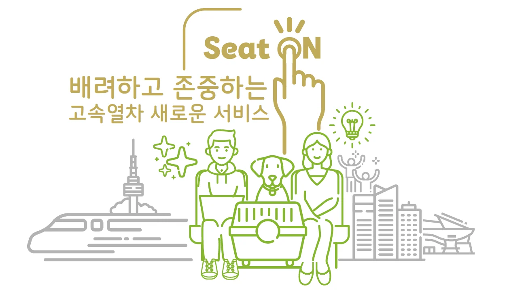
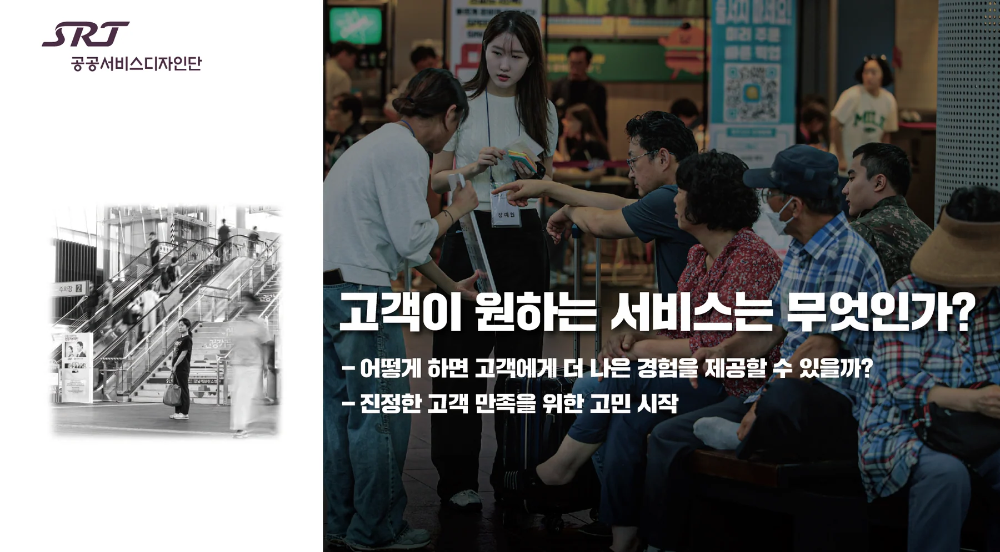
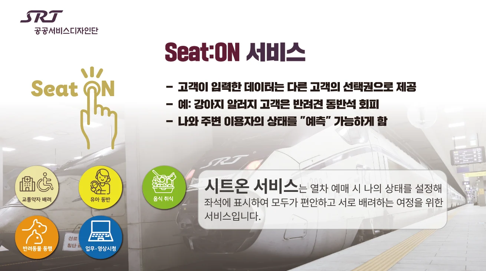
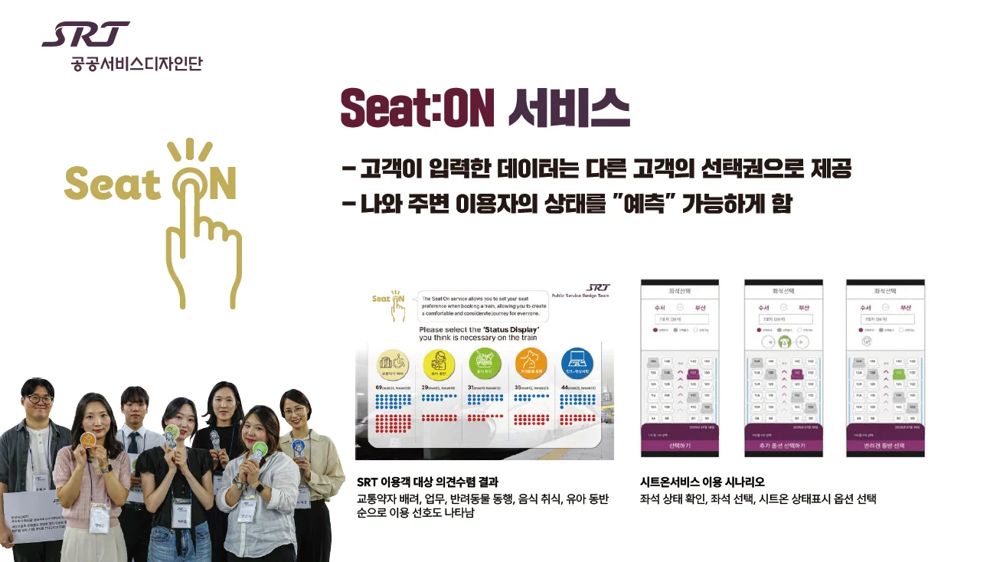
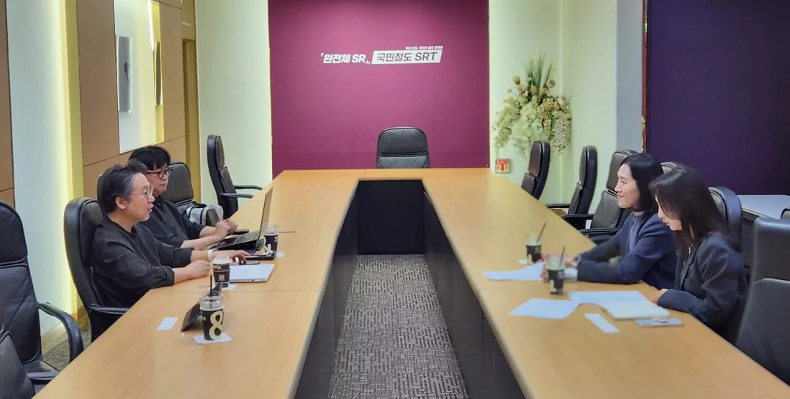

SRT의 공공서비스디자인 — 소통과 해결의 도구
[공공디자인 인터뷰]
SRT의 공공서비스디자인: '예쁜 것'을 넘어 '소통과 해결'의 도구로
모두를 위한 편안한 여정, 디자인으로 열다
공급자 중심의 기존 철도 서비스에서 벗어나, 국민 한 사람 한 사람의 눈높이에 맞춘 철도 서비스를 만들기 위한 SRT의 새로운 도전을 소개합니다. '초개인화' 시대에 발맞춰 대중교통의 패러다임을 바꾸고 있는 SRT의 공공서비스디자인 프로젝트 이야기를 지금 시작합니다.
2025 공공서비스디자인 우수사례 (행정안전부장관상, 우수상)
고속철도 SRT 서비스를 re-design하다
국토교통부 에스알 국민디자인단 구성
서비스디자이너 : 강동선
SRT 공무원 : 이보배, 김현은
국민참여자 : 서지선, 김상아, 류제윤, 박이진, 문세연, 김인아, 최현준
디자인, 고객의 마음을 여는 새로운 열쇠
SRT가 더 나은 고객 경험을 위해 새로운 여정을 시작했습니다. 바로 행정안전부가 주관하는 '국민디자인단' 프로젝트에 참여하며 '디자인'을 통해 고객의 숨겨진 목소리를 듣고, 서비스를 혁신하는 실험에 나선 것입니다. 대중 철도교통 서비스에 공공디자인이 접목되어 의미 있는 변화를 만들어내고 있습니다.
“ 과거 우리는 '디자인'이라고 하면 예쁘고 심미적인 것을 떠올리곤 했습니다. 하지만 이번 프로젝트를 통해 저희 SRT는 디자인에 대한 인식을 완전히 바꾸게 되었습니다. 디자인은 단순히 무언가를 꾸미는 작업이 아니라, 고객조차 스스로 인지하지 못했던 불편함을 발견하고, 더 나은 방향으로 행동을 유도하는 '과정'이자 '소통'의 도구임을 깨달은 것입니다...”
기존의 설문조사나 데이터 분석만으로는 파악할 수 없었던 지점들이 있었습니다. 그러나 고객의 동선을 관찰하고 깊이 있는 대화를 나누는 디자인 과정을 통해, 우리는 고객의 언어 너머에 있는 진짜 필요를 발견할 수 있었습니다. 이는 공급자 중심의 사고에서 벗어나, 사람을 중심에 두고 문제를 해결하는 공공행정의 혁신적인 전환점이기도 합니다.
작은 실험이 만든 큰 변화: '시트원 서비스'
이번 프로젝트의 대표적인 혁신적인 아이디어는 바로 '시트원(Seat One) 서비스'입니다. 열차 내 소음이나 반려동물 동반 등으로 인해 승객 간에 발생할 수 있는 갈등을 사전에 예방하기 위해 고안된 서비스입니다. 민원이 발생한 후에 처리하는 기존 방식에서 벗어나, 고객이 좌석을 선택하는 단계에서 관련 정보를 미리 제공함으로써 서로 배려하는 문화를 만들자는 취지입니다.
"옆자리 승객 때문에 불편했어요." "아이와 함께 타는데 주위 눈치가 보여요.“
지금까지 철도 서비스는 설문조사나 고객의 소리(VOC)를 통해 표현된 문제들을 해결하는 데 집중해왔습니다. 하지만 승객들이 말로 표현하지 않거나, 스스로도 인지하지 못하는 숨겨진 불편함은 해결하기 어려웠습니다. 특히 한정된 공간을 다수가 함께 이용하는 대중교통의 특성상, 소음, 냄새, 반려동물 동반, 노트북 사용 등 개인의 편의와 타인의 불편이 충돌하는 갈등은 끊이지 않았습니다.
SRT는 이러한 문제들을 해결하기 위해 기존의 방식에서 벗어나 '서비스디자인'이라는 새로운 해법을 도입했습니다. 단순히 예쁘고 심미적인 것을 만드는 디자인이 아닌, 고객의 행동과 감정을 깊이 관찰하고 이해하여 문제를 근본적으로 해결하는 과정으로서의 디자인에 주목한 것입니다. 고객이 말한 것, 그 이상의 것을 찾아내기 위한 여정이었습니다.
어떻게 문제를 발견하고 해결했을까요?
'국민디자인단'의 5단계 여정 SRT는 정책 수요자인 국민, 서비스 디자이너, SR 직원이 함께하는 '국민디자인단'을 구성했습니다. 이들은 '이해하기 → 발견하기 → 정의하기 → 발전하기 → 전달하기'의 5단계 활동을 통해 고객의 여정 전체를 세심하게 재진단했습니다.
특히 '발견하기' 단계에서는 단순 설문을 넘어 고객 섀도잉(그림자 관찰), 심층 인터뷰 등의 기법을 적극 활용했습니다. 이를 통해 시니어 고객들이 키오스크 사용에 어려움을 겪는 모습, 교통약자들이 역사 내에서 마땅한 대기 공간이 없어 불편해하는 상황, 그리고 무엇보다 많은 승객이 옆자리 승객으로 인한 불확실성과 심리적 불안을 경험하고 있다는 점을 발견했습니다.
"고객이 언어로 표현하지 않는 것을 발견했다는 것, 고객조차 모르는 고객의 니즈를 관찰을 통해 발견했던 포인트가 저희에게는 매우 큰 수확이었습니다. "
이러한 발견을 바탕으로 국민디자인단은 승객 간의 갈등을 최소화하고 서로 배려하는 문화를 만들기 위한 핵심 아이디어, 바로 '맞춤형 좌석 선택 시스템'을 개발했습니다.
SRT, 디자인의 '테스트 베드'를 꿈꾸다
” 저희가 테스트베드처럼 한번 실험해서 정말 좋다고 하면 확장성을 가지고 다방면으로 활용되길 바랍니다. 저희가 그 시작점이 되어 사회적으로 가치가 더 확산되는 것을 원하고 있고, 그게 공공기관으로서 해야 되는 역할이라고 생각합니다.“
SRT는 이번 프로젝트를 일회성으로 끝내지 않고, 서비스디자인 방법론을 정례화하여 지속적으로 고객의 숨은 니즈를 발굴해 나갈 계획입니다. 곧 도입될 'SR 통합예약발매시스템'을 통해 이번에 개발된 '맞춤형 좌석 선택 시스템'을 안정적으로 구현하고, 앞으로 도입될 신규 열차에도 이러한 디자인적 관점을 적극 반영할 것입니다.
이번 공공서비스디자인 프로젝트는 SRT가 단순한 이동 수단을 넘어, 사람과 사람을 연결하고 서로를 배려하는 문화를 만드는 사회적 플랫폼으로 나아가는 중요한 첫걸음입니다. 모든 고객이 존중받으며 편안하게 이동할 수 있는 철도 서비스를 만들기 위한 SRT의 혁신은 계속될 것입니다.
인터뷰 및 자료제공 : SRT 이보배차장, 김현은대리




